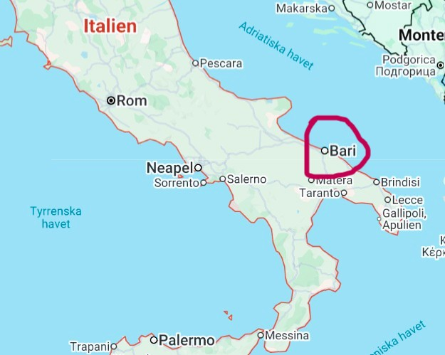
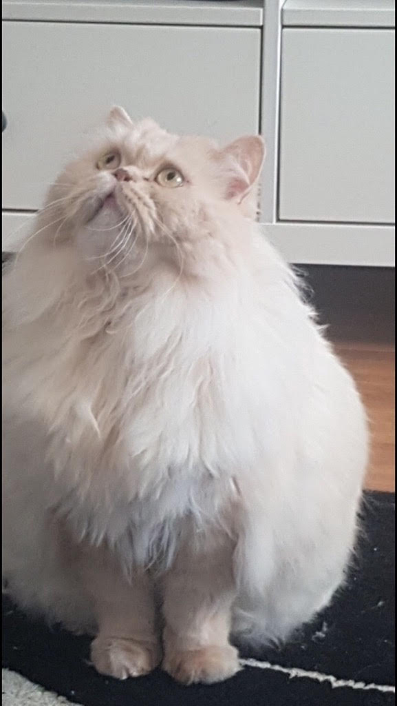

Om oss
Ägaren
Gino Linetti
Jag, Gino är 23 år gammal och studerar i dagsläget på masterprogrammet i International Business på LTU.
Är idag ägaren av Café Blå Lagunen, som kommer befinna sig nära centrum i stan. Jag tar även några
kurser i webbutveckling på LTU så att jag kan lära mig skapa hemsidor genom HTML, något jag nämligen är
väldigt intresserad av.
Jag har skapat Blå Lagunen från grunden och det är ett projekt jag är väldigt nöjd över. På min fritid
tycker jag om att gå långa promenader i naturen, spela spel (såsom Persona 4 och 5, Danganronpa,
Baldur's Gate 3, Balatro med mera), laga mat/baka och gör gärna saker spontant då jag sällan sitter still.
Jag kommer ursprungligen ifrån Italien, specifikt från Bari som ligger cirka vid hälen av själva klacken,
om man föreställer sig att Italien ser ut som en stövel, cirka här:

Här har ni en annan av mina familjemedlemar nämligen min katt Figaro som precis börjat spinna för fult här bredvid mig
och påminner mig om att det är dags att servera kvällsmat så fortsättning följer... och nej han är inte fet.
Det här är nämligen hans viterskrud!
